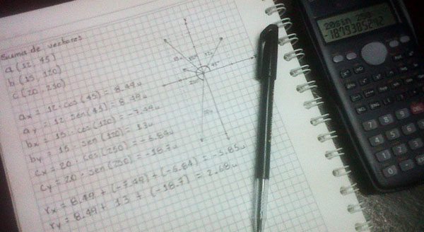
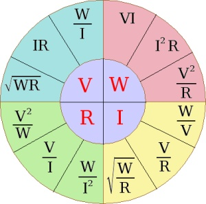
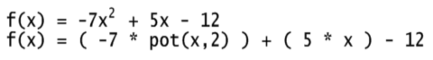

Bienvenido/a a PRHONE Calculador Matemático!
 La matemática es una de las áreas en las que a nivel general se les considera más difíciles de aprender, ya que a pesar de ser la ciencia más exacta y simple, los razonamientos matemáticos quedan muy palpables, lo que genera confusión.
Existen muchas maneras de que la educación matemáticas y cualquier área que tenga que ver con los números, resulte fácil y práctica de enseñarla y aprenderla, dentro de los que nos encontramos los medios visuales que son los más útiles, la mente asimila mejor la información que se transmita de tal manera.
PRHONE Calculador Matemático es un software que tiene como fin, visualizar los procesos más utilizados, representativos y explicativos vistos durante el bachiller, interactuando de manera fácil y flexible para facilitar la enseñanza y el aprendizaje de ella.
Principalmente, todos los procesos físicos, pueden representarse visualmente, y muchos de los fundamentales utilizados en la matemática. Para poder representar las fórmulas y simbologías en las aplicaciones de PRHONE Calculador Matemático, es necesario conocer un poco de la sintaxis, que cambia un poco a como se escribe en el papel manualmente, para ello observa la sección de ayuda en donde encontraras más información al respecto.
Que sea de gran utilidad para los maestros y alumnos que quiera reforzar y mejorar su enseñanza y aprendizaje de las extenso mundo de las matemáticas, en especial a la Comunidad Laureanista, para su desarrollo y mejora continua en el mundo de las especialidades técnicas y académicas.
Funciones
Matemáticas > Funciones
Una función se le considera a la relación biunívoca única entre los elementos de dos grupos, es decir, un elemento de un grupo, corresponde sólo a un único elemento del otro grupo. Un ejemplo es la relación en una lista de nombres de algunas personas, en los que a cada uno le corresponde su peso en kilogramos. Si decimos que María le corresponde 50 kg, a Carlos 55 kg, a Mario 70 kg y a Luisa 53 kg, esto es a una función, ya que a cada elemento del primer grupo (las personas), le corresponde un sólo elemento del segundo grupo (los pesos en kilogramos).
Numéricamente hablando, encontramos que para la relación y = x, se refiere a que el elemento que representa y, siempre corresponderá a un elemento x; como los literales son variables, estos siempre representaran valores distintos que son indeterminados. Se pueden representar gráficamente en el plano cartesiano como se verá abajo, y dependiendo de cómo determinar el valor de los literales (si para determinar o despejar x o y se usan raíces, logaritmos, potencias, razones trigonométricas, etc.), nos podrán resultar diferentes gráficas.
Lineal Cuadrática Cúbica Racional Exponencial Logarítmica Trigonomética
Vectores
Matemáticas > Vectores
Los vectores son la representación de magnitudes físicas, en forma de flecha recta, el cual posee una magnitud, una dirección y un sentido dentro de un sistema de referencia, como en este caso, el plano cartesiano. Los vectores se denotan o nombran con una sola letra (A, E, etc.), o con las letras de sus extremos (AB, MN, etc.).
Todo vector posee tres cualidades. Magnitud: es la longitud del segmento rectilíneo de un vector y se simboliza indicando al vector entre barras, |A|. Dirección: es el ángulo formado con la horizontal del vector. Sentido: ubicación del vector hacia un extremo: sentido hacia la derecha o hacia la izquierda.
Los vectores se utilizán para representar objetos o elementos en movimiento dentro de un plano en dos o tres dimensiones, en este caso, dos dimensiones. Además se pueden realizar las operaciones arítmeticas con ellos. Veremos como sumarlos y restarlos con el método de los Componentes Rectangulares.
Suma por Coordenadas Rectangulares Resta por Coordenadas Polares
Triángulos
Matemáticas > Triángulos
El triángulo es el polígono del menor número de lados (3) y de ángulos (3). Éste polígono sirve como base para el desarrollo de los demás polígonos y para la formulación de teoremas que permiten el desarrollo axiomático de la geometría.
Se clasifican según la longitud de sus lados y la amplitud de sus ángulos. Si sus tres lados son de igual longitud, se le llama al triángulo Equilátero, en cambio, si sólo tiene dos de sus lados iguales, el triángulo es Isósceles, pero si él tiene sus tres lados desiguales, entonces el triángulo es Escaleno. Cuando se clasifican según sus ángulos, si tiene sus tres ángulos agudos, es decir, menores a 90 grados, el triángulo es Acutángulo, pero si el triángulo tiene un ángulo recto, en otras palabras, un ángulo tiene 90 grados exactamente, entonces es Rectángulo, sin embargo si tiene un ángulo obtuso, o sea un ángulo mayor a 90 grados, entonces el triángulo es Obtusángulo.
Una propiedad de los triángulos es que la suma de sus tres ángulos, da como resultado 180 grados. Entre los elementos notables del triángulo encontramos sus lados normalmente nombrados como a, b, c en minusculas, y sus angulos opuestos respectivos A, B, C en mayúsculas, su altura se denota como h, con las cuales podemos hallar su área A.
En la siguiente aplicación podemos resolver un triángulo cualquiera. Un triángulo posee seis partes principales, tres ángulos y tres lados, conociendo tres de ellos, en los cuales obligatoriamente uno debe ser un lado, se puede resolver el triángulo. Para ello se hace uso de la trigonometría.
Equilatero Acutángulo Isósceles Rectángulo Escaleno Obtusángulo
Ley de Ohm y de Watt
Matemáticas > Ley de Ohm y de Watt
La ley de Ohm establece que la intensidad eléctrica (Amperaje) que circula entre dos puntos de un circuito eléctrico es directamente proporcional a la tensión eléctrica (Voltaje) entre dichos puntos, existiendo una constante de proporcionalidad entre estas dos magnitudes. Dicha constante de proporcionalidad es la conductancia eléctrica, que es inversa a la resistencia eléctrica.
La ecuación que establece esta relación de la ley se define como: V = I * R
Donde V es voltaje, I intensidad de la corriente, y R resistencia electrica en Ohmios. Específicamente, la ley de Ohm dice que la R en esta relación es constante, independientemente de la corriente.
En la ley de Watt, la potencia eléctrica suministrada por un receptor es directamente proporcional a la tensión de la alimentación del circuito y a la intensidad que circule por él, en la cual, la ecuación sería: P = V * I.
El vatio o watt es la unidad de potencia del Sistema Internacional de Unidades. Su símbolo es W. Es el equivalente a 1 julio por segundo (1 J/s) y es una de las unidades derivadas.
Expresado en unidades utilizadas en electricidad, el vatio es la potencia producida por una diferencia de potencial de 1 voltio y una corriente eléctrica de 1 amperio (1 VA).
La siguiente aplicación calcula despeja y calcula datos faltantes, para hallar valores desconocidos en un circuito electrico. Sólo requiere 2 datos, los otros dos los hallará. Recuerda que puedes utilizar multiplos el mayúsculas al final del valor, tales como K de kilo (1.000), M de mega (1.000.000), y también divisores en minúsculas como m de mili (0.001) y u de micro (0.000001).
Temas de ayuda
Sintaxis de simbologías y fórmulas
Al escribir fórmulas en las aplicaciones de PRHONE Calculador Matemático, hay que seguir algunas normas, además de otras que necesariamente las debe conocer quien las utiliza para su correcto funcionamiento, las cuales se encuentran implicitas en el determinado tema a tratar.
En la sintaxís de las fórmulas o ecuaciones utilizadas, se utilizan principalmente las operaciones de:
Suma
Su representación es: +
Resta
Su representación es: -
Multiplicación
Su representación es: *
En el algebra representar un termino, manualmente sería: 5x + 3, su correspondiente sintaxis es ( 5 * x ) + 3, ya que los terminos se agrupan entre paréntesis, y en este caso, el 5 multiplica a la variable x.
División
Su representación es: /
Para dividir dos valores, se utiliza de la siguiente manera, ( 3 / v ) / ( 2 * p ), el primer ejemplo es 3 entre la variable v, cuando los valores son terminos unitarios, como el 3 y no 7*x, y como la variable v y no 5-3; el segundo caso es el de dos valores agrupados entre paréntesis, que resultaría lo más recomendable, y da como resultado igual que como si fuese manualmente.
Raíces
La más utilizada es raíz cuadrada, la cual se representa como: raiz2( valor )
Su representación estándar es: raiz( índice, valor )
El índice representa el valor de índice de la radicación. El valor entre paréntesis equivale a la cantidad subradical a calcular. como el siguiente ejemplo: raiz2( x - 2 ). Tenga en cuenta que los valores a sacar raíz deben ser todos los reales positivos mayor o igual a cero.
Potenciación
Su representación es: pot( base, exponente )
Los valores entre paréntesis separados por una coma (,), equivale a la base de la potencia y al exponente. Un ejemplo sería: 5 + pot( x, 2 ), la cual sumaría 5 a x elevado a la 2.

Logarítmación
Su representación sería: log( base, valor )
Para calcular un logarítmo de cualquier base, entre paréntesis se coloca primero la base del logarítmo, después de la coma (,), se coloca el valor logarítmizado. Por ejemplo: ( 5*y ) - log( 10, 25 ). En el ejemplo, el 5 se multiplica por la variable y, y se le resta el logarítmo base 10 de 25.
Funciones Trigonométricas
Las funciones trigonométricas se representan:
Seno: sen( valor )
Coseno: cos( valor )
Tangente: tan( valor )
Para representar las funciones inversas, como ejemplo cosecante, se dividiria 1 entre seno de un valor. Por ejemplo: 1 / sen( x ). Los valores tomados, deben ser en radianes. Recuerda que si quieres convertir de grados a radianes, haz lo siguiente por ejemplo si quieres convertir 75 grados a radianes: ( 75 * ( PI / 180 ) ).
La representación de algunos valores constantes correspondería en PRHONE Calculador Matemático a:
El número PI: PI
El número e (constante de Euler): E
Además de conocer como funciona de antemano lo que se calculara, por ejemplo, que en una función, el dominio, es decir, los valores que puede tomar la variable x cuando hay raíz cuadrada en la fórmula, son todos los números mayores o igual que cero, en caso contrario, resultaría error.
Acerca del Autor
Durante los meses de septiembre, octubre y noviembre del 2011, mi persona, Romel Francisco Pérez Estrada, diseñé y desarrollé este útil software, el cual tiene como objetivo, ser de gran ayuda para la educación matemática, tanto para docentes como aprendices, innovando en los modos de presentar la información, a través de la interactividad y el dinamismo que se puede alcanzar con las computadoras.
Resulta ser de máximo provecho encontrar fácil y conjuntamente, tantas utilidades en la web de la Comunidad Laureanista, el software es accesible por cualquier persona con conexión a internet, y además es de intuitivo aprendizaje para quien tenga nociones matemáticas y pretende agilizar el aprendizaje de ella. Con ello, busca superar los no tan accesibles software de escritorio que, aunque de más rápida ejecución y envergadura, no resultan ser siempre acogidos por el personal educativo, en este caso, en Aguachica.
Alcanzar la excelencia en educación, es posible a través de la innovación activa y constante en los medios que se aplican para llegar a ella, y todas las áreas que se aprenden en el proceso educativo en el bachiller, son de vital importancia en general para toda la vida, principalmente la profesional, y se necesita que se asimilen de la mejor manera para que genere resultados; los software educativos resultan ser muy eficaces y eficientes en ello. PRHONE Calculador Matemático presenta ser un potente medio para la excelencia educativa.
Todo mi trabajo se lo dedico a Dios Jehová, a mis padres y a todos los que de alguna manera me apoyaron de forma directa o indirecta en la creación de él. La creatividad es la mayor herramienta para crecer, espero que esta herramienta les sea útil para mejorar, aprender, y así, crear y crecer.
Añoro que a La Comunidad Laureanista, Instituto Técnico Industrial Laureano Gómez Castro, le sea útil para crecer en educación, tanto los métodos educativos que se aplican, como a ser mejores estudiantes y así, mejores personas.